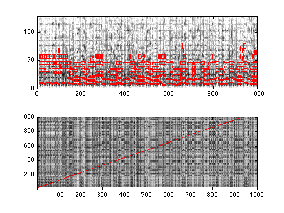

Aligning MIDI scores to music audio
To obtain ground-truth transcriptions of real music audio, it is sometimes possible to find a MIDI version of the track which can then be aligned in time. The time-aligned MIDI events can then be taken as an approximate transcription of the audio. There are several ways to do this, including several choices of the domain in which to do the matching; one popular approach is to synthesize the MIDI version to audio, then do a time alignment between the original audio and the synthetic audio (see, e.g., Turetsky and Ellis ISMIR 2003, or Hu, Dannenberg, and Tzanetakis, WASPAA, 2003).
This code takes a slightly simpler approach. The MIDI file is converted into a "mask", indicating which cells of a spectrogram would be expected to contain energy. This is then aligned to the spectrogram of the actual audio. This is inspired by the "Peak Structure Distance" of Orio and Schwarz, ICMC, 2001.
Contents
Example usage
The code below shows how to run the alignment using the main alignmidiwav routine, and a couple of ways of how the outputs can be used.
% We will need the Jyväskylä MIDI toolbox % from http://www.jyu.fi/musica/miditoolbox/ if exist('readmidi') ~= 2; ... addpath(['/Users/drspeech/share/lib/matlab/miditoolbox']); end % Main function takes MIDI file and audio file as input % .1 is the time resolution (100ms). The 4th argument selects % cosine-distance matching (0), or "peak structure distance" (1). tres = 0.1; midifile = 'SoS.mid'; wavfile = '06_Sultans_of_Swing.mp3'; [m,p,q,S,D,M] = alignmidiwav(midifile,wavfile,tres,0); % D returns the (sub-1kHz) spectrogram derived from the wav file, % and M returns the spectrogram-like mask derived from the MIDI. % m is a mapping index s.t. M(:,m) aligns to D(:,:) subplot(211) % avoid log(0) - replace with smallest nonzero value D(D(:)==0) = min(D(D(:)>0)); % plot spectrogram imagesc(20*log10(D)); axis xy; caxis(max(caxis)+[-50 0]) colormap(1-gray) % outline() takes a binary matrix and superimposes outlines on an % existing image outline(M(:,m),0,'r') % We probably want to zoom in to see the detail maxcol = min(1000,min(size(M,2),size(D,2))); axis([0 maxcol 0 size(D,1)]) % Also plot the DP cost matrix, and the path on top (for the start) subplot(212) imagesc(S(1:maxcol, 1:maxcol)); axis xy; hold on; plot(q,p,'-r'); hold off
Rewriting the MIDI file
We can rewrite a MIDI file that ought to synchronize with the audio. To do this, we take the original MIDI file, map all its times according to the mapping that resulted from the DP match within alignmidiwav. For fun (and manual validation), we can even resynthesize that midi file, and make a stereo file with the original audio in one side, and the midi resynthesis in the other.
% Read in the original MIDI file (using the Jyväskylä toolbox) nmat = readmidi(midifile); % Map the times using the p (MIDI ref times) and q (audio times) % index returns from the alignment. They are in units of the time % resolution (i.e. indices into the similarity matrix). % We rewrite the beat-times, but start from the original times-in-seconds. % First, convert durations to end times nmat(:,7) = nmat(:,6) + nmat(:,7); % Do the mapping based on alignment returns nmat(:,1:2) = maptimes(nmat(:,6:7),(p-1)*tres,(q-1)*tres); % Convert end-times back to durations nmat(:,2) = nmat(:,2) - nmat(:,1); % Write it out. We remove channel 10 since it's the drums % (but all instruments are mapped to piano in writemidi) % Last argument, 60 bpm, ensures that time in beats becomes time in secs. writemidi(nmat(nmat(:,3)~=10,:),'tmp.mid',120,60,4,4); % If you externally convert tmp.mid to tmp.mp3 using a MIDI % synthesizer, you can then generate a stereo file from the % original audio and the MIDI resynthesis to check they make % sense. % midi2wav.scpt is an AppleScript (MacOSX) that does this via % iTunes (but needs a full path as input) system(['rm -f tmp.mp3']); system(['osascript midi2mp3.scpt ',pwd(),'/tmp.mid']); % Now read in both audio files and merge them as L and R channels [do,sro] = mp3read(wavfile); [dm,srm] = mp3read('tmp.mp3',0,1,2); % convert to mono if size(do,2) == 2; do = mean(do')'; end if size(dm,2) == 2; dm = mean(dm')'; end % sample rates must match! if sro ~= srm; dm = 0.9*resample(dm,sro,srm); end % make the same length maxl = max(length(do),length(dm)); do(maxl) = 0; dm(maxl) = 0; % write out mp3write([do,dm],sro,'stereo.mp3');
Download
You can download all the code and data for these examples here: alignmidiwav.tgz. You will also need the dynamic programming code (dpfast.m) from http://labrosa.ee.columbia.edu/matlab/dtw/ . You will also need the Jyväskylä MIDI toolbox.
And for the demo code above, you will need mp3 read/write.
Referencing
If you use this work in a publication, I would be grateful if you referenced this page as follows:
D. P. W. Ellis (2008). "Aligning MIDI scores to music audio", web resource. http://www.ee.columbia.edu/~dpwe/resources/matlab/alignmidiwav/
Acknowledgment
This project was supported in part by the NSF under grant IIS-0713334. Any opinions, findings and conclusions or recommendations expressed in this material are those of the authors and do not necessarily reflect the views of the Sponsors.
% Last updated: $Date: 2009/07/07 14:14:11 $ % Dan Ellis <dpwe@ee.columbia.edu>